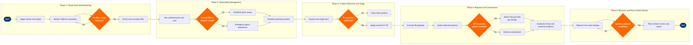

Cybersecurity & Threat Management
Corporate Support Functions › Information Technology · 17 L4 steps · 5 phases · 5 decision gates · Updated 2026-03-19 22:24
📊
Process Flow Diagram (BPMN)

📋
L4 Process Steps
| Step | Step Name | Role / Swim Lane | System | Input | Output | KPI | Dec? | Exc? |
|---|---|---|---|---|---|---|---|---|
Phase 1 1.1 |
Ingest threat intelligence feeds | Threat Intelligence Analyst | SITA Cybersecurity Services / ISAC Aviation AISAC feed | Aviation ISAC threat bulletins, CISA alerts, commercial CTI feeds | Normalised IOC set (IPs, domains, hashes) loaded into SIEM | Feed ingestion latency ≤15 min from publication; IOC coverage ≥95% of subscribed feeds | N | N |
| 1.2 | Monitor SIEM for security anomalies | SOC Analyst (Tier 1) | Microsoft Sentinel | Log streams from Amadeus Altéa PSS, AWS Security Hub, Palo Alto NGFW, endpoint telemetry | Security alerts queue; anomaly tickets auto-created in ServiceNow Security Operations | Mean time to detect (MTTD) ≤4 hrs for high-severity events; alert queue SLA acknowledgement ≤15 min | N | N |
| 1.3 | Correlate IOCs and assess threat credibility | Threat Intelligence Analyst | Microsoft Sentinel / Palo Alto Cortex XSOAR | Raw SIEM alerts, enriched IOCs from threat intel feeds | Threat credibility score; escalation decision to vulnerability management or incident triage | False positive rate ≤12% on high-severity alerts; IOC correlation throughput ≥500 indicators/hr | Y | N |
Phase 2 2.1 |
Schedule and execute authenticated vulnerability scan | Vulnerability Management Engineer | Tenable.io | Asset inventory from AWS Security Hub and ServiceNow CMDB; approved scan windows | Vulnerability report with CVSS scores, affected asset list, and CVE references | Scan coverage ≥98% of in-scope assets per cycle; scan cycle ≤7 days for internet-facing assets | N | N |
| 2.2 | Prioritise vulnerabilities by CVSS and asset criticality | Vulnerability Management Engineer | Tenable.io / ServiceNow Security Operations | Raw vulnerability report, asset criticality tiers from CMDB | Risk-ranked remediation backlog with SLA targets (P1–P4) in ServiceNow | P1 (CVSS ≥9.0) remediation SLA ≤24 hrs; P2 (CVSS 7.0–8.9) ≤7 days; mean vulnerability age ≤30 days | Y | N |
| 2.3 | Execute patch deployment or emergency remediation | IT Security Engineer | ServiceNow Security Operations / AWS Systems Manager Patch Manager | Approved remediation backlog item, change request from ServiceNow CAB | Patched asset record, vulnerability closure confirmation in Tenable.io | Patch success rate ≥99% without service disruption; emergency patch deployment ≤4 hrs for P1 | N | Y |
Phase 3 3.1 |
Classify and triage incoming security alert | SOC Analyst (Tier 1) | Palo Alto Cortex XSOAR | Alert from Microsoft Sentinel or CrowdStrike Falcon EDR | Initial triage record with classification (malware, phishing, insider, DDoS, etc.) and severity P1–P4 | Triage completion ≤15 min for P1/P2; analyst throughput ≥20 alerts/hr per Tier-1 analyst | N | N |
| 3.2 | Validate alert as true or false positive | SOC Analyst (Tier 2) | CrowdStrike Falcon / Microsoft Sentinel | Triage record, endpoint telemetry, network flow logs from Palo Alto NGFW | Confirmed true/false positive determination; false positives closed with tuning note | True positive confirmation rate ≥88%; false positive closure with tuning update ≤2 hrs | Y | N |
| 3.3 | Assign incident owner and escalate to IR team | SOC Lead | ServiceNow Security Operations | Confirmed true positive with severity, initial classification | Incident ticket assigned to IR owner; P1 bridge call initiated; CISO notified for P1 | P1 escalation to IR team ≤30 min from true positive confirmation; IR lead acknowledgement ≤15 min | N | Y |
Phase 4 4.1 |
Activate incident response playbook | Incident Response Lead | Palo Alto Cortex XSOAR | Incident ticket, threat classification, affected asset list | Active XSOAR playbook run with assigned task steps; war room opened in collaboration tool | Playbook activation ≤5 min of IR lead assignment; playbook coverage ≥95% of known threat categories | N | N |
| 4.2 | Isolate affected endpoints and network segments | IR Engineer | CrowdStrike Falcon / Palo Alto NGFW | Confirmed affected asset list from XSOAR playbook | Isolated hosts (network contain via CrowdStrike); VLAN quarantine applied via Palo Alto policy push | Containment time ≤1 hr for P1; mean time to contain (MTTC) ≤2 hrs across all incidents | N | Y |
| 4.3 | Assess OT or avionics system involvement | Incident Response Lead | ServiceNow Security Operations / Tenable OT Security | Affected asset CMDB records, network topology map, CrowdStrike telemetry | OT/avionics scope determination; regulatory notification trigger decision | OT scope assessment completion ≤30 min of containment; 100% of OT-involved incidents flagged for TSA notification within required window | Y | N |
| 4.4 | Notify TSA and CISA per cybersecurity directive SD-04C | CISO / Regulatory Compliance Manager | TSA Cybersecurity Reporting Portal / ServiceNow GRC | OT/avionics involvement confirmation, incident severity, timeline of events | TSA notification submitted within 24 hrs; CISA report filed; log preserved in ServiceNow GRC | TSA notification compliance: 100% on-time within 24-hr regulatory window; zero overdue reports | N | N |
| 4.5 | Eradicate threat and preserve digital evidence | IR Engineer / Digital Forensics Analyst | CrowdStrike Falcon / AWS S3 (evidence bucket) | Isolated systems, threat actor TTPs, XSOAR playbook eradication task | Cleaned endpoints, forensic image stored in AWS S3 evidence bucket with chain of custody | Evidence collection completeness ≥99% of affected hosts; eradication verified by CrowdStrike scan before re-entry to network | N | Y |
Phase 5 5.1 |
Restore systems from clean validated backup | IR Engineer / Platform Engineer | AWS Backup / ServiceNow Change Management | Eradication sign-off, approved recovery runbook, last known-good backup snapshot | Restored system instance, recovery validation test results, change record closed in ServiceNow | RTO ≤4 hrs for P1 critical systems (PSS, crew system); RPO ≤1 hr for tier-1 systems | Y | N |
| 5.2 | Conduct post-incident review and root cause analysis | CISO / IR Lead / SOC Lead | ServiceNow Security Operations / Confluence | Incident timeline, XSOAR playbook run log, forensic evidence summary | Post-incident review (PIR) report with RCA, timeline, and ≥3 action items in ServiceNow | PIR completion ≤5 business days for P1; 100% of action items assigned with due date; action item closure rate ≥85% within 30 days | N | N |
| 5.3 | Update controls, playbooks, and threat detection rules | Security Architect / Threat Intelligence Analyst | Microsoft Sentinel / Palo Alto Cortex XSOAR / Tenable.io | PIR action items, new threat actor TTPs identified during incident | Updated Sentinel detection rules, revised XSOAR playbooks, new Tenable scan policies; changes logged in ServiceNow GRC | Detection rule update deployment ≤48 hrs of PIR sign-off; XSOAR playbook coverage improvement measured per PIR cycle | N | N |
📋